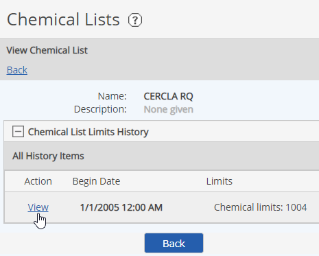
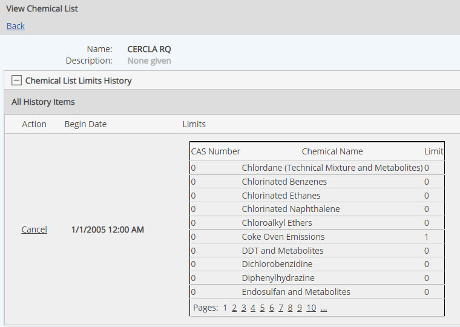

Chemical Lists are groupings of chemicals associated with specific regulatory requirements. Each chemical in the list has a defined limit within the regulatory grouping. Several standard regulatory Chemical Lists, derived from the EPA List of Lists, are provided in the system. For information about these regulatory lists, see:
https://www.epa.gov/epcra/consolidated-list-lists
Chemical Lists can be used for regulatory limits in Material Activity calculations. Data will then be checked against the limit for the selected chemical in the referenced list.
You may also create a custom Chemical List, and import or export a Chemical List.
To view Chemical Lists, users must have the Manage Materials and Activities user right.
To view the Chemical List properties:
The existing Chemical Lists are displayed. The "Type" column show whether a list is standard (provided by the software for all users) or custom (specific to your system).
Click View.

The chemicals and their associated limits are shown.
